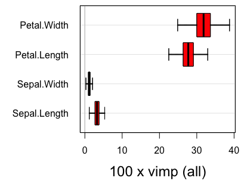

Variable Importance (VIMP) with Subsampling Inference
Hemant Ishwaran
Min Lu
Udaya B. Kogalur
2022-06-01
rfsrc-subsample.Rmd![]()
Introduction
Random forests (RF) software developed by [1] provides for various options for calculating variable importance (VIMP). One approach used for classification forests is Gini impurity importance [2]. However, by far, the more popular measure of importance is another measure provided by the software, called permutation importance (referred to as Breiman-Cutler importance). Unlike Gini importance which estimates importance using in-sample impurity, permutation importance adopts a prediction based approach by using prediction error attributable to the variable. A clever feature is that rather than using cross-validation, which is computationally expensive for forests, permutation importance estimates prediction error by making use of out-of-bootstrap cases. Recall each tree is calculated from a bootstrap sample of the original data. The approximately \(1-.632=.368\) left from the bootstrap represents out-of-sample data which can be used for estimating prediction performance. This data is called out-of-bag (OOB) and prediction error obtained from it is called OOB error [3, 4]. Permutation importance permutes a variable’s OOB data and compares the resulting OOB prediction error to the original OOB prediction error — the motivation being that a large positive value indicates a variable with predictive importance.
Permutation (Breiman-Cutler) Importance
In the OOB cases for a tree, randomly permute all values of the \(j\)th variable. Put these new covariate values down the tree and compute a new internal error rate. The amount by which this new error exceeds the original OOB error is defined as the importance of the \(j\)th variable for the tree. Averaging over the forest yields VIMP.
\(\qquad\qquad\qquad\qquad\quad\)— Measure 1 (Manual On Setting Up, Using, And Understanding Random Forests V3.1
Mathematical description of VIMP
In a nutshell, we can see that permutation importance is essentially a technique for estimating the importance of a variable by comparing performance of the estimated model with and without the variable in it. This is a very popular technique and has been used throughout machine learning [2, 5–14].
One technical point we should mention though, is that permutation importance does not actually remove the variable from the model, and this is one of the unique features of it that makes it computationally fast. What actually happens is that the permutation is designed to push a variable to a terminal node different than its original assignment. Essentially, the farther away this is from the original terminal node, the more likely it is that the variable is important. The following figure illustrates this.
Figure 1
Illustration of how randomly permuting a variable leads to different terminal node assignments. Nodes colored red are tree nodes that split on the target variable \(j\). In the top panel on the left using bold arrows is the path that a data point \({\bf x}\) takes as it traverses through the tree to its terminal node assignment “1.” On the right, the \(j\) coordinate of \({\bf x}\) has been randomly permuted and its new terminal node assignment is now “4.” In the bottom panel is the path for another \({\bf x}\) value. Its terminal node assignment is “6.” However when \(j\) is permuted, its new terminal assigment becomes “5.” Importantly, notice that in the top panel the terminal node assignment after randomly permuting \(j\) is much farther than its original terminal node assignment than in the bottom panel. This shows that the higher variable \(j\) splits in the tree, the more an effect permutation has on final terminal node membership, and hence on prediction error. Click to zoom in.
{kind=link}
Notation
The fact that permutation importance is a comparison of model performance under alteration to the variable can be seen more clearly as we now provide a more formal description of VIMP (hereafter we will refer to Breiman-Cutler importance simply as VIMP). We assume \(Y\in\mathscr{Y}\) is the response and \({\bf X}\in\mathscr{X}\) is the \(p\)-dimensional feature where \(Y\) can be continuous, binary, categorical, or survival, and \({\bf X}\) can be continuous or discrete. We assume the underlying problem involves a nonparametric regression framework where the goal is to estimate a functional \(\psi({\bf x})\) of the response given \({\bf X}={\bf x}\). Estimation is based on the learning data \(\mathscr{L}_n=\{({\bf X}_1,Y_1),\ldots,({\bf X}_n,Y_n)\}\), where \(({\bf X}_i,Y_i)\) are independently distributed with the same distribution \(\mathbb{P}\) as \(({\bf X},Y)\).
Examples of \(\psi({\bf x})\) are:
- The conditional mean \(\psi({\bf x})=\mathbb{E}[Y|{\bf X}={\bf x}]\) in regression.
- The conditional class probabilities \(\psi_1({\bf x}),\ldots,\psi_C({\bf x})\) in a \(C\)-multiclass problem, where \(\psi_c({\bf x})=\mathbb{P}\{Y=c|{\bf X}={\bf x}\}\), for \(c=1,\ldots,C\).
- The survival function \(\psi({\bf x})=\mathbb{P}\{T^o>t|{\bf X}={\bf x}\}\) in survival analysis. Here \(Y=(T,\delta)\) represents the bivariate response comprised of the observed survival time \(T=\min(T^o,C^o)\) and censoring indicator \(\delta=I\{T^o\le C^o\}\), where \((T^o,C^o)\) are the unobserved event and censoring times.
RF predictor
Recall our getting started vignette [15] that a RF is a collection of randomized tree predictors \(\{\varphi(\cdot,{\Theta}_m,\mathscr{L}_n), m=1,\ldots,M\}\). Here \(\varphi({\bf x},{\Theta}_m,\mathscr{L}_n)\) denotes the \(m\)th random tree predictor of \(\psi({\bf x})\) and \({\Theta}_1,\ldots,{\Theta}_M\) are independent identically distributed random quantities encoding the randomization needed for constructing a tree. Note that each \({\Theta}_m\) is selected prior to growing the tree and is independent of the learning data, \(\mathscr{L}_n\).
The tree predictors are combined to form the finite forest estimator of \(\psi({\bf x})\), \[ \varphi({\bf x},{\Theta}_1,\ldots,{\Theta}_M,\mathscr{L}_n) = \frac{1}{M} \sum_{m=1}^M \varphi({\bf x},{\Theta}_m,\mathscr{L}_n). \] The infinite forest estimator is obtained by taking the limit as \(M\rightarrow\infty\) and equals \[ \varphi({\bf x},\mathscr{L}_n) = \mathbb{E}_{\Theta}\left[ \varphi({\bf x},{\Theta},\mathscr{L}_n)\right]. \label{forest.pred.infinite} \]
Loss function
Calculating VIMP assumes some well defined notion of prediction error. Therefore, we assume there is an appropriately prechosen loss function \(\ell(Y,\hat{\varphi})\ge 0\) used to measure performance of a predictor \(\hat{\varphi}\) in predicting \(\psi\). Examples include:
- Squared error loss \(\ell(Y,\hat{\varphi})=(Y-\hat{\varphi})^2\) in regression problems.
- For classification problems, measures of performance used are the misclassification error or the Brier score. For the latter, \(\ell(Y,\hat{\varphi})=(1/C)\sum_{c=1}^C\left(I\{Y=c\}-\hat{\varphi}_c\right)^2\), where \(\hat{\varphi}_c\) is the estimator for the conditional probability \(\psi_c\).
- For survival, the weighted Brier score [16, 17] can be used (see our RSF vignette, [18]).
Tree VIMP
Let \(\mathscr{L}_n^{\text{IB}}({\Theta}_m)\) be the \(m\)th bootstrap sample and let \(\mathscr{L}_n^{\text{OOB}}({\Theta}_m)=\mathscr{L}_n\setminus\mathscr{L}_n^*({\Theta}_m)\) be the OOB data. Write \({\bf X}=(X^{(1)},\ldots,X^{(p)})\) where \(X^{(j)}\) denotes the \(j\)th feature coordinate. The permuted value of the \(j\)th coordinate of \(X\) is denoted by \(\tilde{X}^{(j)}\). Substituting this into the \(j\)th coordinate of \({\bf X}\) yields \(\tilde{{\bf X}}^{(j)}\): \[ \tilde{{\bf X}}^{(j)}=(X^{(1)},\ldots,X^{(j-1)},\tilde{X}^{(j)},X^{(j+1)},\ldots,X^{(p)}). \] VIMP is calculated by taking the difference in prediction error under the original \({\bf X}\) to prediction error under the perturbed \(\tilde{{\bf X}}^{(j)}\) over OOB data. More formally, let \(I(X^{(j)},{\Theta}_m,\mathscr{L}_n)\) denote the VIMP for \(X^{(j)}\) for the \(m\)th tree. It follows that \[\begin{eqnarray*} && I(X^{(j)},{\Theta}_m,\mathscr{L}_n)\\ && \qquad = \frac{\sum_{i\in\mathscr{L}_n^{\text{OOB}}({\Theta}_m)} \ell(Y_i, \varphi(\tilde{{\bf X}}^{(j)}_i,{\Theta}_m,\mathscr{L}_n))}{|\mathscr{L}_n^{\text{OOB}}({\Theta}_m)|} - \frac{\sum_{i\in\mathscr{L}_n^{\text{OOB}}({\Theta}_m)} \ell(Y_i, \varphi({\bf X}_i,{\Theta}_m,\mathscr{L}_n))}{|\mathscr{L}_n^{\text{OOB}}({\Theta}_m)|}. \end{eqnarray*}\]
VIMP
Averaging tree VIMP over the forest yields VIMP: \[ I(X^{(j)},{\Theta}_1,\ldots,{\Theta}_M,\mathscr{L}_n) = \frac{1}{M} \sum_{m=1}^M I(X^{(j)},{\Theta}_m,\mathscr{L}_n). \] An infinite tree estimator for VIMP can be defined analogously by taking the limit as \(M\rightarrow\infty\), \[ I(X^{(j)},\mathscr{L}_n) = \mathbb{E}_{\Theta}\left[I(X^{(j)},{\Theta},\mathscr{L}_n)\right]. \] It is worth noting that neither of these definitions explicitly use the forest ensemble predictor and instead each relies on single tree predictors. This is a unique feature of VIMP because it is a tree-based estimator of importance.
Illustration
VIMP can be extracted using the option importance in either grow mode using rfsrc() or in prediction mode using predict.rfsrc(). The default importance is Breiman-Cutler and is specified by setting importance=TRUE or more directly by importance = "permute". There is also a dedicated interface vimp() for calculating VIMP.
Below we use the Iris data set to illustrate VIMP for the multiclass problem. For classification, the default setting used by the package is misclassification error which corresponds to zero-one loss for the loss function. Performance under the Brier score is also available. To request VIMP for the Brier score use the option perf.type="brier".
We note that the package uses a slightly modified Brier score, which we refer to as the normalized Brier score and is defined as follows. Let \(Y\in\{1,\ldots,C\}\) be the response. If \(0\le \hat{\varphi}_c\le 1\) denotes the predicted probability that \(Y\) equals class \(c\), \(c=1,\ldots,C\), the normalized Brier score is defined as \[ \text{BS}^* = \frac{C}{C-1}\sum_{c=1}^C \left(1\{Y=c\} - \hat{\varphi}_c\right)^2. \] Observe how the normalizing constant \(C/(C-1)\) used here is different than the value \(1/C\) typically used for the Brier score. We multiply the traditional Brier score by \(C^2/(C-1)\) because we have noticed that the value for the Brier score under random guessing depends on the number of classes, \(C\). If \(C\) increases, the Brier score under random guessing converges to 1. The normalizing constant used here resolves this problem and yields a value of 1 for random guessing, regardless of \(C\). Thus, anything below 1 signifies a classifier that is better than pure guessing. A perfect classifier has value 0. In the output given below for the Iris analysis, the Brier score and the normalized Brier score are listed in line 14 and 15. The OOB AUC value (area under the ROC curve) is listed in line 16.
The OOB confusion matrix for the analysis is listed from line 19 to 25. Overall misclassification error equals sum of off-diagonal elements of the confusion matrix divided by total sample size, and is displayed on line 27. The overall misclassification error, along with the misclassification errors for each specific class label, are displayed in line 17.
library(randomForestSRC)
iris.obj <- rfsrc(Species ~ ., data = iris)
iris.obj
> 1 Sample size: 150
> 2 Frequency of class labels: 50, 50, 50
> 3 Number of trees: 500
> 4 Forest terminal node size: 1
> 5 Average no. of terminal nodes: 9.52
> 6 No. of variables tried at each split: 2
> 7 Total no. of variables: 4
> 8 Resampling used to grow trees: swor
> 9 Resample size used to grow trees: 95
> 10 Analysis: RF-C
> 11 Family: class
> 12 Splitting rule: gini *random*
> 13 Number of random split points: 10
> 14 (OOB) Brier score: 0.02479567
> 15 (OOB) Normalized Brier score: 0.11158052
> 16 (OOB) AUC: 0.99306667
> 17 (OOB) Error rate: 0.04666667, 0.02, 0.06, 0.06
> 18
> 19 Confusion matrix:
> 20
> 21 predicted
> 22 observed setosa versicolor virginica class.error
> 23 setosa 49 0 0 0.02
> 24 versicolor 0 47 3 0.06
> 25 virginica 0 3 47 0.06
> 26
> 27 Overall (OOB) error rate: 4.666667%Use the vimp() function:
print(vimp(iris.obj)$importance)
> all setosa versicolor virginica
> Sepal.Length 0.0091442229 0.04457982 0.02392088 0.005436564
> Sepal.Width 0.0001288857 0.02065894 -0.01848432 -0.001087313
> Petal.Length 0.2012338277 0.74154728 0.54256905 0.340328885
> Petal.Width 0.2386940818 0.90790613 0.67304658 0.346852761The above output lists misclassification error VIMP for each predictor. First column is overall VIMP, remaining columns are class specific VIMP for “setosa,” “versicolor” and “virginica” obtained by conditioning the data on the respective class labels.
# VIMP using brier prediction error
print(vimp(iris.obj, perf.type = "brier")$importance)
> all setosa versicolor virginica
> Sepal.Length 0.03569896 0.01235568 0.030889279 0.0214482610
> Sepal.Width 0.01093318 0.01034908 0.009094997 0.0003689035
> Petal.Length 0.44634242 0.25745261 0.309862352 0.2415413527
> Petal.Width 0.49537671 0.30815849 0.347015242 0.2425419476The above output lists Brier score VIMP for each predictor. First column is overall VIMP, remaining columns are class specific VIMP for “setosa,” “versicolor” and “virginica” obtained by conditioning the data on the respective class labels.
Inference for VIMP
Now we describe how to estimate the variance for VIMP and construct confidence regions [19]. So far we have the following constructs: \[\begin{alignat*}{2} \hat{\theta}^{(j)}_{n,M} &= \frac{1}{M} \sum_{m=1}^M I(X^{(j)},{\Theta}_m,\mathscr{L}_n) &\qquad\text{Monte Carlo VIMP}\\ \hat{\theta}^{(j)}_{n} &=\mathbb{E}_{\Theta}\left\{I(X^{(j)},{\Theta},\mathscr{L}_n)\right\} &\qquad\text{infinite tree VIMP}\\ \theta^{(j)}&=\lim_{n\rightarrow\infty}\mathbb{E}\left\{\hat{\theta}^{(j)}_{n}\right\} &\qquad\text{population VIMP} \end{alignat*}\] Notice that we have changed our notation slightly, replacing \(I(X^{(j)},{\Theta}_1,\ldots,{\Theta}_M,\mathscr{L}_n)\) with \(\hat{\theta}^{(j)}_{n,M}\) and \(I(X^{(j)},\mathscr{L}_n)\) with \(\hat{\theta}^{(j)}_{n}\). This will be advantageous as not only does it simplify the notation, but it also helps emphasize that the quantities involved are estimators, which makes it easier to conceptualize and state results about their properties.
For the theoretical derivation, it will be easier to deal with infinite tree VIMP, \(\hat{\theta}^{(j)}_{n}\), rather than Monte Carlo VIMP, \(\hat{\theta}^{(j)}_{n,M}\). The latter obviously closely approximates the former for a large enough number of trees. Our goal is to approximate the distribution of the rescaled test statistic \[ \widehat{J}^{(j)}_n=n^{1/2}(\hat{\theta}^{(j)}_n-\theta^{(j)}) \] and this in turn will be used to approximate the variance of \({\upsilon}^{(j)}_n=\text{Var}(\hat{\theta}^{(j)}_n)\) and for constructing confidence intervals.
Bootstrap variance estimator (.164 estimator)
When stated this way, a first thought that might come to mind, is why not just use the bootstrap variance estimator? Recall that the bootstrap is used for approximating the distribution for complicated estimators and this approximation naturally provides an estimate for the variance as well.
More formally, let \(X_1,\ldots,X_n\) be i.i.d. random values with common distribution \(\mathbb{P}\). Let \(\hat{\theta}_n=\hat{\theta}(X_1,\ldots,X_n)\) be some estimator for \(\theta(\mathbb{P})\), an unknown real-valued parameter we wish to estimate. The bootstrap estimator for the variance of \(\hat{\theta}_n\) is based on the following simple idea. Let \(\mathbb{P}_n=(1/n)\sum_{i=1}^n \delta_{X_i}\) be the empirical measure for the data. Let \(X_1^*,\ldots,X_n^*\) be a bootstrap sample obtained by independently sampling \(n\) points from \(\mathbb{P}_n\), i.e. \[ X_1^*,\ldots,X_n^*\stackrel{\mathrm{iid}}{\sim} \mathbb{P}_n(\cdot)=\frac{1}{n}\sum_{i=1}^n \delta_{X_i}(\cdot). \] Because \(\mathbb{P}_n\) converges to \(\mathbb{P}\) under general conditions, we should expect the moments of the bootstrap estimator \(\hat{\theta}_n^*=\hat{\theta}(X_1^*,\ldots,X_n^*)\) to closely approximate population values, which should therefore closely approximate \(\hat{\theta}_n\) if the estimator is converging. In particular \[\begin{eqnarray*} \text{Var}_{\mathbb{P}_n}(\hat{\theta}_n^*) &=&\mathbb{E}_{\mathbb{P}_n}\left(\hat{\theta}_n^*-\mathbb{E}_{\mathbb{P}_n}(\hat{\theta}_n^*)\right)^2\\ &\asymp& \frac{1}{K} \sum_{k=1}^K\left(\hat{\theta}_{n,k}^* - \frac{1}{K}\sum_{k'=1}^K \hat{\theta}_{n,k'}^*\right)^2\\ &\asymp& {\upsilon}_n=\text{Var}(\hat{\theta}_n) \end{eqnarray*}\] where \(\hat{\theta}_{n,1}^*,\ldots,\hat{\theta}_{n,K}^*\) denote bootstrap estimators from \(K\) independently drawn boootstrap samples.
However, there is a problem with using the bootstrap variance estimator for VIMP. A direct application cannot be used due to a double-bootstrap effect. This is because if we use the bootstrap method, then this forces us to grow a collection of forests, where each forest is constructed using a given bootstrap data. But each bootstrap contains duplicates and when we construct a tree, which also bootstraps the data, then we are bootstrapping a bootstrap data set, which compromises the coherence of the OOB data.
We can see that the double bootstrap data lowers the probability of being truly OOB. Let \(n_i\) be the number of occurrences of case \(i\) in \(\mathscr{L}_n^{\text{IB}}\), where \(\mathscr{L}_n^{\text{IB}}\) is a bootstrap sample of the data. Then, \[ \Pr\{\text{$i$ is truly OOB in $\mathscr{L}_n^{\text{IB}}({\Theta})$}\} = \sum_{l=1}^n \Pr\{\text{$i$ is truly OOB in $\mathscr{L}_n^{\text{IB}}({\Theta})$}|n_i=l\} \,\Pr\{n_i=l\}. \] We have \[\begin{eqnarray*} (n_1,\ldots,n_n) &\sim& \text{Multinomial}(n, (1/n,\ldots,1/n))\\ n_i&\sim& \text{Binomial}(n, 1/n)\asymp\text{Poisson}(1). \end{eqnarray*}\] Hence, \[\begin{eqnarray*} &&\hskip-50pt \sum_{l=1}^n \Pr\{\text{$i$ is truly OOB in $\mathscr{L}_n^{\text{IB}}({\Theta})$}|n_i=l\} \,\Pr\{n_i=l\}\\ && =\sum_{l=1}^n \left(\frac{n-l}{n}\right)^n\Pr\{n_i=l\}\\ && \asymp \sum_{l=1}^n \left(\frac{n-l}{n}\right)^n \left(\frac{\text{e}^{-1}1^l}{l!}\right)\\ && \text{e}^{-1}\sum_{l=1}^n \left(1-\frac{l}{n}\right)^n\frac{1}{l!}\\ && \asymp \text{e}^{-1}\sum_{l=1}^n \frac{\text{e}^{-l}}{l!} \asymp .1635 < .368. \end{eqnarray*}\] Therefore, double bootstrap data has an OOB size of \(.164n\) which is smaller than the true OOB size of \(.368n\).
The above discussion points to a simple solution to the problem which we call the .164 bootstrap estimator [19]. The .164 estimator is a bootstrap variance estimator but is careful to use only truly OOB data. The algorithm for this procedure is outlined by the following steps:
- Draw a bootstrap sample \(\mathscr{L}_{n,k}^{\text{IB}}\).
- Calculate Monte Carlo VIMP using uniquified OOB data \[
\hat{\theta}^{*(j)}_{n,k}
:=\hat{\theta}^{*(j)}_{n,M}(\mathscr{L}_{n,k}^{\text{IB}})
=\frac{1}{M} \sum_{m=1}^M I(X^{(j)},{\Theta}_m,\mathscr{L}_{n,k}^{\text{IB}}).
\]
- Repeat \(K>1\) times obtaining estimators \(\hat{\theta}^{*(j)}_{n,1},\ldots,\hat{\theta}^{*(j)}_{n,K}\).
- Estimate the variance of VIMP by \[ \hat{\upsilon}^{*(j)}_{n}= \frac{1}{K} \sum_{k=1}^K\left(\hat{\theta}^{*(j)}_{n,k} - \frac{1}{K}\sum_{k'=1}^K \hat{\theta}^{*(j)}_{n,k'}\right)^2. \]
Subsampling (sampling without replacement)
A problem with the .164 bootstrap estimator is that its OOB data set is smaller than a typical OOB estimator (16.4% versus 36.8%). Thus in a forest of 1000 trees, the .164 estimator uses about 164 trees on average to calculate VIMP for a case compared with 368 trees used in a standard calculation. This can reduce efficiency of the .164 estimator. Another problem is computational expense. The .164 estimator requires repeatedly fitting RF to bootstrap data which can be computationally intensive, especially for big data.
To avoid these problems, we propose a more efficient procedure based on subsampling theory [20]. The idea rests on calculating VIMP over small i.i.d. subsets of the data. Because sampling is without replacement, this avoid ties in the OOB data that creates problems for the bootstrap. Also, because each forest is grown for a very small data set, the procedure is computationally efficient.
To explain this approach abstractly, as before let \(X_1,\ldots,X_n\) be i.i.d. random values with common distribution \(\mathbb{P}\) and let \(\hat{\theta}_n=\hat{\theta}(X_1,\ldots,X_n)\) be some estimator for some unknown parameter \(\theta(\mathbb{P})\). Let \(S_{n,b}\) be the entire collection of subsets of \(\{1,\ldots,n\}\) of size \(b<n\). For each \(s=\{i_1,\ldots,i_b\}\in S_b\), let \(\hat{\theta}_{n,b,s}=\hat{\theta}(X_{i_1},\ldots,X_{i_b})\) be the subsampled estimator. The goal will be to use estimators \(\hat{\theta}_{n,b,s}\) to approximate the sampling distribution of \(\widehat{J}_n\), the rescaled test statistic defined by \[ \widehat{J}_n = n^{1/2}(\hat{\theta}_n-\theta(\mathbb{P})). \]
Let \(\mathbb{Q}_n\) denote the distribution of \(\widehat{J}_n\).
If \(\mathbb{Q}_n\stackrel{\mathrm{d}}{\leadsto}\mathbb{Q}\) and \(b/n\rightarrow 0\) [20] \[
\widetilde{U}_{n,b}(x)
=\frac{1}{\binom{n}{b}}\sum_{s\in S_{n,b}} I\{b^{1/2}\left(\hat{\theta}_{n,b,s} -
\hat{\theta}_n\right)\le x\}
\stackrel{\mathrm{d}}{\leadsto}
F(x)=\mathbb{Q}[-\infty, x].
\] The expression on the left, \(\widetilde{U}_{n,b}(x)\), closely approximates \[
\text{U}_{n,b}(x)
=\frac{1}{\binom{n}{b}}\sum_{s\in S_{n,b}} I\{b^{1/2}\left(\hat{\theta}_{n,b,s} -
\theta(\mathbb{P})\right)\le x\}
\] which is a \(U\)-statistic of order \(b\) from which the distributional result follows by \(U\)-statistic theory. Now the assumption \(\mathbb{Q}_n\stackrel{\mathrm{d}}{\leadsto}\mathbb{Q}\) implies due to i.i.d. sampling that \[
\begin{aligned}
\widehat{J}_n &=n^{1/2}(\hat{\theta}_n-\theta(\mathbb{P})) &\stackrel{\mathrm{d}}{\leadsto}\mathbb{Q}\\
\widehat{J}_{n,b} &=b^{1/2}(\hat{\theta}_{n,b}-\theta(\mathbb{P})) &\stackrel{\mathrm{d}}{\leadsto}\mathbb{Q}\\
\widetilde{J}_{n,b}&=b^{1/2}(\hat{\theta}_{n,b}-\hat{\theta}_n) &\stackrel{\mathrm{d}}{\leadsto}\mathbb{Q}
\end{aligned}
\] where the last line follows by the assumption that \(b\) is asymptotically smaller than \(n\). This last line is the most important, since unlike the previous two lines it does not depend on the unknown parameter. Thus it can be calculated, and the strategy is to approximate \(\mathbb{Q}_n\) using \(\widetilde{J}_{n,b,s_1},\ldots,\widetilde{J}_{n,b,s_K}\) calculated from subsampled estimators as the last line shows these converge to the true \(\mathbb{Q}\) which is the limiting distribution for \(\mathbb{Q}_n\).
Subsampling estimator for the variance of VIMP
Let \(s_1,\ldots,s_K\) be \(K\) different subsampled sets from \(S_{n,b}\) and let \(\mathscr{L}_{n,b,s}\) denote the learning data for a subsampled set \(s\). The subsampled estimator for the variance is [19] \[ \hat{\upsilon}^{(j)}_{n,b}= \frac{b/n}{K} \sum_{k=1}^K \Bigl(\hat{\theta}^{(j)}_{n,b,s_k} - \frac{1}{K}\sum_{k'=1}^K \hat{\theta}^{(j)}_{n,b,s_{k'}}\Bigr)^2 \] where \(\hat{\theta}^{(j)}_{n,b,s} =\frac{1}{M} \sum_{m=1}^M I(X^{(j)},{\Theta}_m,\mathscr{L}_{n,b,s})\) is the subsampled Monte Carlo VIMP estimator. It is instructive to compare this to the bootstrap estimator \[ \hat{\upsilon}^{*(j)}_{n}= \frac{1}{K} \sum_{k=1}^K\left(\hat{\theta}^{*(j)}_{n,k} - \frac{1}{K}\sum_{k'=1}^K \hat{\theta}^{*(j)}_{n,k'}\right)^2 \] where \(\hat{\theta}^{*(j)}_{n,k} =\frac{1}{M} \sum_{m=1}^M I(X^{(j)},{\Theta}_m,\mathscr{L}_{n,k}^{\text{IB}})\). We see that the estimators are essentially doing the same thing but the difference between them is in the method of sampling. The bootstrap uses sampling with replacement whereas the subsampled estimator uses sampling without replacement. Also the subsample size \(b\) is asympotically smaller than \(n\). This is the reason for the scaling factor \(b/n\) appearing above, which is another difference between the estimators.
Delete-d jackknife estimator for the variance of VIMP
The subsampling variance estimator is closely related to the delete-\(d\) jackknife [21]. The delete-\(d\) estimator works on subsets of size \(r=n-d\) and for VIMP is defined as [19] \[ \hat{\upsilon}^{(j)}_{n,J(d)} = \frac{r/d}{K}\sum_{k=1}^K (\hat{\theta}^{(j)}_{n,r,s_k} - \hat{\theta}^{(j)}_{n,M})^2, \hskip10pt r=n-d. \] Setting \(d=n-b\) (which means \(r=b\)), and with rearrangement, \[\begin{eqnarray*} \hat{\upsilon}^{(j)}_{n,J(d)} &=& \overbrace{\frac{b/(n-b)}{K}}^{\color{red}{\asymp b/n}} \sum_{k=1}^K \Bigl(\hat{\theta}^{(j)}_{n,b,s_k} - \frac{1}{K}\sum_{k'=1}^K\hat{\theta}^{(j)}_{n,b,s_{k'}}\Bigr)^2\\ &&+ \frac{b}{n-b} \Bigl( \underbrace{\frac{1}{K}\sum_{k=1}^K \hat{\theta}^{(j)}_{n,b,s_k}-\hat{\theta}^{(j)}_{n,M}}_{\color{red}{\text{bias}}} \Bigr)^2 . \end{eqnarray*}\]
The first term closely approximates the subsampling estimator since \(b/n\rightarrow 0\), while the second term is a bias correction to the subsampled estimator. This correction is due to the fact the subsampled estimator tries to approximate the Monte Carlo VIMP \(\hat{\theta}^{(j)}_{n,M}\) using subsampled Monte Carlo estimators. Furthermore, this correction is always upwards because the bias term is squared and always positive.
Confidence regions
Subsampling can also be used to calculate nonparametric confidence intervals [20]. The general idea for constructing a confidence interval for a target parameter \(\theta(\mathbb{P})\) is as follows. Define the \(1-\alpha\) quantile for the subsampling distribution as \(c_{n,b}(1-\alpha) = \inf\{x: \widetilde{U}_{n,b}(x)\ge 1-\alpha\}\). Similarly, define the \(1-\alpha\) quantile for the limiting distribution \(\mathbb{Q}\) of \(\widehat{J}_n\) as \(c(1-\alpha) = \inf\{t: F(x)=\mathbb{Q}[-\infty,x]\ge 1-\alpha\}\). Then, assuming \(\mathbb{Q}_n\stackrel{\mathrm{d}}{\leadsto}\mathbb{Q}\) and \(b/n\rightarrow 0\), the interval \[ \left[\hat{\theta}_n - n^{-1/2} c_{n,b}(1-\alpha), \infty\right) \] contains \(\theta(\mathbb{P})\) with asymptotic probability \(1-\alpha\) if \(c(1-\alpha)\) is a continuity point of \(F\).
While the above is able to calculate a nonparametric confidence interval for VIMP, a more practicable and stable solution can be obtained by assuming asympotic normality. Let \(\theta^{(j)}\) be population VIMP defined earlier. Let \(\hat{\upsilon}^{(j)}_n\) be an estimator for \({\upsilon}^{(j)}_n=\text{Var}(\hat{\theta}^{(j)}_n)\). Assuming asymptotic normality, \[ \frac{\hat{\theta}^{(j)}_{n,M}-\theta^{(j)}}{\sqrt{\hat{\upsilon}^{(j)}_n}}\stackrel{\mathrm{d}}{\leadsto}\text{N}(0,1), \] an asymptotic \(100(1-\alpha)\) confidence region for \(\theta^{(j)}\), the true VIMP, can be defined as \[ \hat{\theta}^{(j)}_{n,M} \pm z_{\alpha/2}\sqrt{\hat{\upsilon}^{(j)}_n}, \] where \(z_{\alpha/2}\) is the \(1-\alpha/2\)-quantile from a standard normal, \(\Pr\{\text{N}(0,1)\le z_{\alpha/2}\}=1-\alpha/2\). We have found that the assumption of asymptotic normality is quite reasonable in most applications [19].
Illustration
The following R code calculates the confidence interval using delete-\(d\) jackknife estimator. For .164 confidence intervals, we can use subsample(iris.obj, B = 25, bootstrap = TRUE).
library(randomForestSRC)
iris.obj <- rfsrc(Species ~ ., data = iris)
## very small sample size so need largish subratio
reg.smp.o <- subsample(iris.obj, B = 25, subratio = .5)
## summary of results
print(reg.smp.o)
> ===== VIMP confidence regions for all =====
> nonparametric:
> Sepal.Length Sepal.Width Petal.Length Petal.Width
> 2.5% 2.388 0.303 24.857 28.376
> 25% 3.182 1.196 27.343 31.846
> 50% 3.823 1.348 28.000 33.578
> 75% 4.172 1.454 28.863 35.219
> 97.5% 4.726 1.840 31.238 36.439
> parametric:
> Sepal.Length Sepal.Width Petal.Length Petal.Width
> 2.5% 2.534 0.526 24.212 27.527
> 25% 3.381 1.001 26.446 30.528
> 50% 3.825 1.251 27.618 32.102
> 75% 4.270 1.500 28.790 33.676
> 97.5% 5.117 1.976 31.024 36.676
> parametric (jackknife):
> Sepal.Length Sepal.Width Petal.Length Petal.Width
> 2.5% 2.522 0.535 24.156 27.021
> 25% 3.377 1.004 26.427 30.353
> 50% 3.825 1.251 27.618 32.102
> 75% 4.274 1.497 28.809 33.850
> 97.5% 5.129 1.967 31.080 37.183
> ===== VIMP confidence regions for setosa =====
> nonparametric:
> Sepal.Length Sepal.Width Petal.Length Petal.Width
> 2.5% -0.371 -0.105 26.974 34.992
> 25% 1.613 1.159 28.220 36.268
> 50% 2.766 1.420 29.050 37.237
> 75% 3.289 1.682 29.742 37.914
> 97.5% 4.289 2.051 31.707 39.335
> parametric:
> Sepal.Length Sepal.Width Petal.Length Petal.Width
> 2.5% 1.143 0.282 26.454 33.403
> 25% 2.904 1.074 28.187 35.000
> 50% 3.827 1.490 29.096 35.838
> 75% 4.751 1.905 30.006 36.676
> 97.5% 6.512 2.697 31.739 38.273
> parametric (jackknife):
> Sepal.Length Sepal.Width Petal.Length Petal.Width
> 2.5% 0.063 0.252 26.496 32.279
> 25% 2.532 1.064 28.202 34.613
> 50% 3.827 1.490 29.096 35.838
> 75% 5.123 1.916 29.991 37.063
> 97.5% 7.592 2.728 31.697 39.397
> ===== VIMP confidence regions for versicolor =====
> nonparametric:
> Sepal.Length Sepal.Width Petal.Length Petal.Width
> 2.5% 1.278 -0.424 21.287 30.080
> 25% 3.111 0.658 23.704 32.393
> 50% 3.464 0.997 25.058 34.299
> 75% 4.618 1.396 27.871 35.745
> 97.5% 5.368 1.956 32.149 39.395
> parametric:
> Sepal.Length Sepal.Width Petal.Length Petal.Width
> 2.5% 0.670 0.007 18.824 26.436
> 25% 2.135 0.822 22.887 29.950
> 50% 2.903 1.250 25.019 31.793
> 75% 3.672 1.678 27.151 33.637
> 97.5% 5.137 2.494 31.214 37.150
> parametric (jackknife):
> Sepal.Length Sepal.Width Petal.Length Petal.Width
> 2.5% 0.270 -0.090 18.665 24.360
> 25% 1.997 0.789 22.832 29.235
> 50% 2.903 1.250 25.019 31.793
> 75% 3.809 1.712 27.206 34.351
> 97.5% 5.537 2.591 31.374 39.226
> ===== VIMP confidence regions for virginica =====
> nonparametric:
> Sepal.Length Sepal.Width Petal.Length Petal.Width
> 2.5% 2.498 1.010 21.559 12.851
> 25% 4.147 1.446 25.683 24.405
> 50% 4.685 1.569 27.666 28.219
> 75% 5.792 1.800 30.619 30.018
> 97.5% 6.709 2.052 33.912 33.216
> parametric:
> Sepal.Length Sepal.Width Petal.Length Petal.Width
> 2.5% 2.130 0.396 21.372 17.174
> 25% 3.821 0.792 26.025 24.508
> 50% 4.708 1.000 28.466 28.357
> 75% 5.595 1.208 30.907 32.206
> 97.5% 7.286 1.604 35.560 39.541
> parametric (jackknife):
> Sepal.Length Sepal.Width Petal.Length Petal.Width
> 2.5% 2.182 -0.265 21.455 16.987
> 25% 3.839 0.565 26.053 24.444
> 50% 4.708 1.000 28.466 28.357
> 75% 5.577 1.436 30.879 32.270
> 97.5% 7.234 2.266 35.477 39.727
## plot confidence regions using the delete-d jackknife variance estimator
#plot.subsample(reg.smp.o)Figure 2

In the above output, parametric refers to inference under the assumption of asymptotic normality, while nonparametric refers to the nonparametric subsampling method described in the Section on Confidence regions. Figure 2 displays the confidence regions using the delete-d jackknife.
Cite this vignette as
H. Ishwaran, M. Lu, and U. B. Kogalur. 2021. “randomForestSRC: variable importance (VIMP) with subsampling inference vignette.” http://randomforestsrc.org/articles/vimp.html.
@misc{HemantVIMP,
author = "Hemant Ishwaran and Min Lu and Udaya B. Kogalur",
title = {{randomForestSRC}: variable importance {(VIMP)} with subsampling inference vignette},
year = {2021},
url = {http://randomforestsrc.org/articles/vimp.html}
}